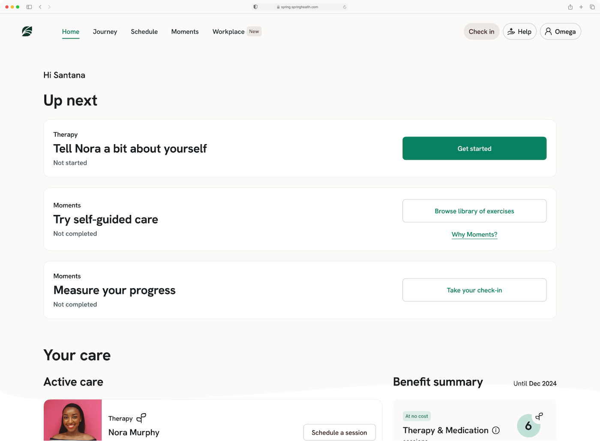
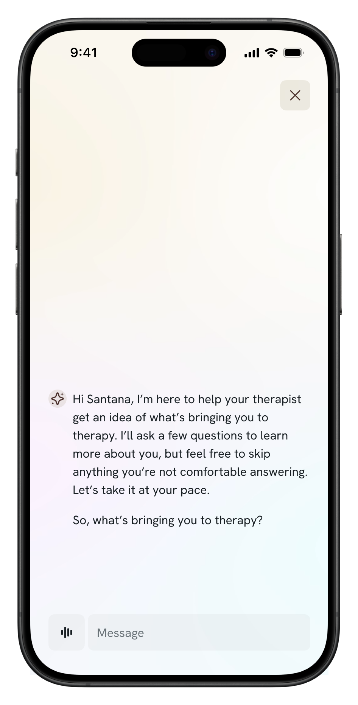
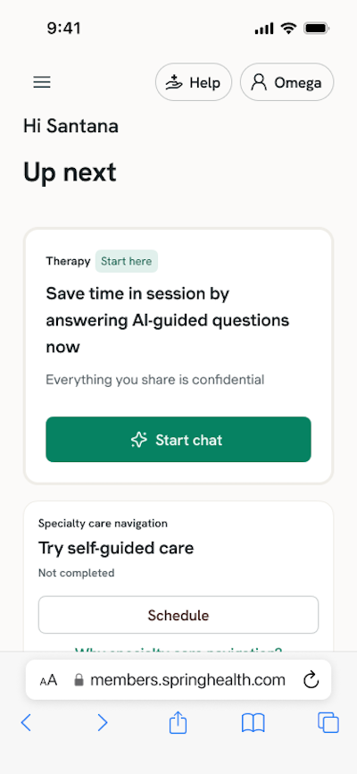
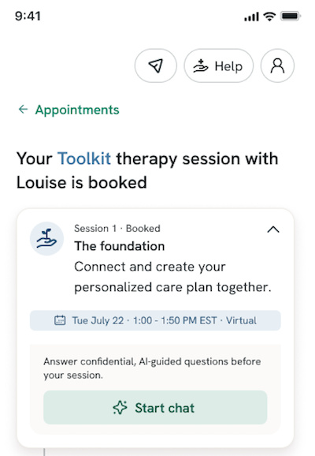

Context
Spring Health is a mental health platform that connects members with therapists, gives providers tools to deliver care, and helps employers understand workforce mental health outcomes.
When a member books their first therapy session, providers need background on what's bringing them in. Historically this meant a questionnaire completed in the first appointment — valuable information, but it ate into the time members could spend on actual care.
The AI product team built a solution: a chatbot that walks members through intake questions before the first session, so providers can spend less time on administration and more time on care.
The problem
When the chatbot was piloted, the drop-off numbers were striking. 25% of users abandoned at the disclaimer screen, and 32% dropped off at the welcome message — before ever answering a single question.
This told me the issue wasn't the chatbot itself. Users were leaving before they'd even engaged with it. Something earlier in the experience was causing hesitation.


My hypothesis
Both entry points to the chatbot — from the homepage and from the post-booking confirmation — offered almost no context about what users were about to do. They clicked a button and suddenly found themselves in a chat interface with an AI, with no explanation of why, what it would ask, or where their answers would go.
Hypothesis: The lack of context on the entry points was creating an expectation gap — users expected a form or a human-led intake, and got a chatbot instead. That surprise was driving abandonment.
Research
To validate this, I initiated and ran a quick unmoderated usability study through Dscout.
Study design
- 9 participants, lookalike member personas
- Unmoderated, static screens + think-aloud
- Covered: entry point → disclaimer → chat
- Focus: expectation-setting and trust signals
Key questions
- What do users expect when they click "Get started"?
- What creates hesitation at the disclaimer?
- What would make them feel comfortable continuing?
The feedback confirmed the hypothesis. Users expected a form or a human-led intake. They encountered a chatbot — with AI disclosed only after they'd already committed to starting. The purpose was unclear, and the disclaimer felt alarming rather than reassuring.
Strategy
Working with the designer and PM, I developed a content strategy built around one principle: design for the most hesitant user.
What the research told us
- Users expected a form, not a chatbot
- AI use created confusion and concern
- Lack of clarity caused hesitation at disclaimer
UX principles we set
- Set expectations early
- Explain the "why" behind AI use
- Reinforce trust through transparency
What changed
On the homepage entry point, I rewrote the card to explain what users were about to do, why it benefits them, and that their answers are confidential. I also added an AI icon to the CTA button so the format wasn't a surprise.
On the post-booking entry point, space was more constrained, so I prioritized expectation-setting — since the first message from the bot itself covers the purpose and confidentiality.
New homepage CTA copy: "Save time in session by answering AI-guided questions now — everything you share is confidential."


Impact
(down from 25%)
By driving this project myself, I also freed up PM and designer bandwidth to stay focused on roadmap work — a pattern I try to establish wherever I'm the sole content person on a team.
My contributions
Initiated and conducted the usability research · Synthesized findings and developed content strategy · Proposed and wrote the updated entry point copy · Recommended the addition of an AI icon to the CTA · Presented recommendations to PM and designer